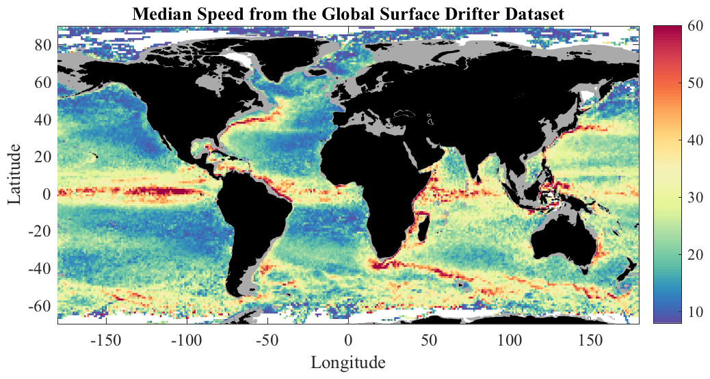

TWODMED Median value of a function of two variables. __________________________________________________________________  __________________________________________________________________ MED=TWODMED(X,Y,Z,XBIN,YBIN) where X, Y and Z are arrays of the same length, forms the median of Z over the XY plane. If XBIN and YBIN are length N and M, respectively, then MED is of size M-1 x N-1. Bins with no data are assigned a value of NAN. XBIN and YBIN must be monotonically increasing. MED=TWODMED(X,Y,Z,N) uses N bins in the X and Y directions, linearly spaced between the minimum and maximum values. MED is N-1 x N-1. MED=TWODMED(X,Y,Z,[XMIN XMAX],[YMIN YMAX],N) uses N bins, linearly spaced between the designated X and Y values. MED is N-1 x N-1. [MED,XMID,YMID]=TWODMED(...) optionally returns the midpoints XMID and YMID of the bins. X, Y, and Z can also be cell arrays of numerical arrays, in which case all data values are concatented prior to finding the histogram. TWODMED, TWODSTATS, and TWODHIST are three related functions for computing statistics as a function two variables using very fast algorithms that avoid any loops through efficient use of indexing. __________________________________________________________________ Algorithms TWODMED uses a fast (exact) algorithm which is particularly efficient for large arrays. The values of Z are sorted into bins according to the associated (X,Y) value, with bin edges specified by XBIN and YBIN, and the median of finite values of Z in each bin is computed looplessly using indexing. TWODMED(...,'slow') uses a slow algorithm which uses less memory. By default, TWODMED uses a fast but memory-intensive algorithm. Use this flag if you get an out-of-memory error. __________________________________________________________________ See also TWODHIST, TWODSTATS. 'twodmed --f' generates the sample figure shown above. 'twodmed --t' runs a test. Usage: med=twodmed(x,y,z,N); med=twodmed(x,y,z,[xmin xmax],[xmin xmax],N); med=twodmed(x,y,z,xbin,ybin); [med,xmid,ymid]=twodmed(x,y,z,xbin,ybin); __________________________________________________________________ This is part of JLAB --- type 'help jlab' for more information (C) 2007--2015 J.M. Lilly --- type 'help jlab_license' for details